Página 290
Respostas
Unidade 1 Figuras geométricas espaciais
1. II e III; I, IV e V
2. Possível resposta: Todos eles são limitados apenas por retângulos.
4. a) 6 faces
b) 12 arestas
c) 8 vértices
5. medida da altura: , medida do comprimento: e medida da largura:
6. alternativa c
7. alternativa a
8. a) 8 cubos
b) 1 cubo
9. a) Possíveis respostas: paralelepípedo retângulo ou bloco retangular
b) Empilhamento cruzado, pois esse tipo de empilhamento garante maior estabilidade em relação ao empilhamento colunar, reduzindo risco de quedas das caixas.
10. prismas: a, b, d; pirâmide: c
11. a-IV; b-I; c-II; d-III
12. a) II e III; I e IV
b) II; I
13. a) Resposta no final da seção Respostas.
b) • 6 faces, 10 arestas e 6 vértices
c) Resposta no final da seção Respostas.
d) • 6 faces, 12 arestas e 8 vértices
14. A resposta depende do prisma escolhido.
15. a) contêiner comum; paralelepípedo retângulo
b) 10 contêineres
16. a) cone
b) esfera
c) cilindro
d) cone
18. a) A peça B, pois sua superfície não tem partes arredondadas.
b) A peça D, pois sua superfície não possui parte plana.
Um pouco mais
1. a) não poliedro
b) poliedro
c) poliedro
d) não poliedro
2. a) paralelepípedo retângulo
b) pirâmide de base triangular
c) prisma de base hexagonal
d) cilindro
Unidade 2 Os números naturais
2. a) outdoor e pôster com promoção
b) termômetro e relógio
c) número da loja e placa de carro
d) pôster de filme
3. código
4. a) ordem
b) Nordeste; 57.667.842 habitantes
5. a) 329
b) 5.240
c) 253.104
d) 2.130.402
7. a)
b) Não.
8. 400.000 bois, 1.422.000 cabras e 120.000 prisioneiros
9. cavalos:
camelos:
10. 1 número
11. a) 27
b) 184
c) 809
d) 3.474
12. Bruno: Estou lendo o capítulo XII de um livro.
Maria: Cristóvão Colombo chegou às Américas no final do século XV.
13. Sim, pois um símbolo de menor valor posicionado à esquerda de um de maior valor representa a diferença entre eles.
14. Resposta no final da seção Respostas.
15. a) Instituzioni Analitiche
b) 1748
c) (MDCCXVIII-MDCCXCIX)
16. 609: DCIX; 2010: MMX; Não.
17. A: 347, B: 6.003, C: 3.902; item A
18. a) 3 e 0 (zero)
b) 38.520
c) 38.520; 30.852
19. a) sistema de numeração egípcio
b) sistema de numeração decimal
c) 0 (zero)
20. a) trezentos mil; 6 ordens
b) trezentos e oitenta e quatro mil e quatrocentos; 6 ordens
21. a) 98.654.320
b) 2.034.568; dois milhões, trinta e quatro mil, quinhentos e sessenta e oito
22. 4.728
a) Possíveis respostas:
;
b) 4 unidades de milhar;
47 centenas; 427 dezenas;
4.728 unidades
24. a)
| Classe dos bilhões | Classe dos milhões | Classe dos milhares | Classe das unidades simples | ||||||||
|---|---|---|---|---|---|---|---|---|---|---|---|
| 12ª | 11ª | 10ª | 9ª | 8ª | 7ª | 6ª | 5ª | 4ª | 3ª | 2ª | 1ª |
| C | D | U | C | D | U | C | D | U | C | D | U |
| 1 | 5 | 0 | 0 | 0 | 0 | 0 | 0 | 0 | |||
| 7 | 7 | 8 | 0 | 0 | 0 | 0 | 0 | 0 | |||
| 1 | 4 | 0 | 0 | 0 | 0 | 0 | 0 | 0 | 0 | ||
b) 1.400.000.000
c) Terra; Saturno
25. a) 388 e 390
b) 1.470 e 1.472
c) 99.938 e 99.940
d) 999.999 e 1.000.001
26. a)
b)
27. Não.
28. a) 2000; 1996
b) Não; Sim.
29. a) 44
b) Porque não existe número natural que seja antecessor do zero.
Página 291
30.
- A: 17
- B: 7.500
- C: 150
31. a) 94, 95, 96, 97, 98 e 99
b) 100, 101, 102, 103 e 104
c) 10.000
32. a) 10 cubos
b) Sim, pois, de acordo com a regularidade da sequência, a pilha 5 terá 15 cubos.
33. a) 9 estudantes
b) Heloísa: 6; Juliana: 5; Gilberto: 2; Fernanda: 4
c) Camila, Daniel, Gilberto, Isadora, Fernanda, Juliana, Heloísa, Ana, Beto
34. O personagem da esquerda ganhou porque escolheu par, e a soma da quantidade de olhos foi 6, que é um número par.
36. Daiane: 11; Murilo: 28
37. ![Imagem de um quadro com quatro colunas e quatro linhas, sendo que em cada um dos espaços há um algarismo. Primeira linha: 2, 1, 3 e 4. Segunda linha: 4, 3, 1 e 2. Terceira linha: 1, 4, 2 e 3. Quarta linha: 3, 2, 4 e 1. Além disso, esse quadro está dividido em quatro quadrados, sendo cada um de uma cor. Da esquerda para direita, as duas primeiras linhas referentes às duas primeiras colunas formam um quadrado que está na cor alaranjada. As duas primeiras linhas referentes a terceira e quarta coluna formam outro quadrado e está em cor amarela. As duas últimas linhas referentes a primeira e a segunda coluna formam um terceiro quadrado em cor verde. E as duas últimas linhas referentes a terceira e quarta coluna formam o último quadrado, em cor azul.](../resources/images/respostas/g24_6sam_v354984Ks.png)
38. a) 7.089; 7
b) 71, 273 e 2.079
c) 1.795 e 2.079
39. 16 quadradinhos; 25 quadradinhos
Um pouco mais
1. A: medida; B: código; C: quantidade; D: ordem
2. a) 3.241
b) 41.023
c) 1.246.201
d) 30.013
3. MMDCLXIX, MMCDXCVI, MCMXXX, MDCCI, MCXLIX, CMXCIV, DCXXXVII e CDLXXII
4. a) CXXIV
b) XXXII
c) MMCCCXLI
5. a) 498; quatrocentos e noventa e oito
b) 607; seiscentos e sete
c) 6.823; seis mil oitocentos e vinte e três
6. a)
b)
7. 3.256: I, II, III, V e VI; 6.818: I, II, V e VI; 10.477: II, IV e V; 901: II, III e IV; 9.185: I, II, III, IV e V.
8. a) II
b) IV e VI; Possível resposta: Porque, se um número é par, então seu sucessor é ímpar.
9. a) 7.638: sete mil, seiscentos e trinta e oito; 6.783: seis mil, setecentos e oitenta e três; 8.367: oito mil, trezentos e sessenta e sete; 3.876: três mil, oitocentos e setenta e seis
b) 7.368: 8; 6.783: 80; 8.367: 8.000: 3.876: 800
c) 4 ordens
d)
10.
| Algarismo do número 11.034 | 1 | 1 | 0 | 3 | 4 |
|---|---|---|---|---|---|
| Valor posicional | 10.000 | 1.000 | 0 | 30 | 4 |
Unidade 3 Operações com números naturais
1. a) 397
b) 962
c) 2.801
d) 101.149
2. a) 2.987 municípios
b) 2.118 municípios
c) 5.572 municípios
3. a) Marina: R$ 300,00; Gustavo R$ 250,00
b) R$ 580,00
5. 4.002
6. a-II; b-III; c-I
7. a) 187
b) 0
c) 512
d) 735
e) 412
f) 0
8. a) 277
9. b ) Felipe: 81; Iara: 80; Jorge: 91
10. a) R$ 740,00
b) R$ 798,00
c) R$ 780,00
d) R$ 232,00
11. a) 1 e 2: ; 1 e 3: ; 1 e 4: ; 2 e 3: ; 2 e 4: ; 3 e 4:
b) 1 e 4; 2 e 4; 3 e 4
c) Podem ter a água completamente despejada na jarra sem que ela transborde os pares de recipientes 2 e 4 ou 3 e 4.
12. a) 18.217
b) 1.523
c) 18.747
d) 23.789
13. a) 515
b) 2.305
c) 6.083
d) 2.187
14. a) 11.786 transplantes
b) 7.804 transplantes
c) 1.616 transplantes
15. a)
b) 999.999
16. a) 60 anos
b) 10 anos
17. a) 55
b) 51
c) 54
d) 24
e) 62
f) 46
18. a) R$ 281,00
19. a) 20/01; 17/01
b) 18/01;
20. a) 65
b) 33
c) 0
d) 294
21. R$ 1.384,00
22. 317 pontos
23. a) 531; ,
b) 704; ,
c) 1.410; ,
d) 2.203; ,
24. A: 4; B: 3; C: 7; D: 5; E: 8; F: 1
25. a) 82
b) 200
c) 460
26. c; R$ 16,00
27. A: 190; B: 25; C: 20; D: 209; E: 180; F: 243; G: 370
28. a) 64
b) 105
c) 172
d) 237
29. R$ 286,00
30. a) 1.837 frascos
b) 21 frascos; 349 frascos
c) • 2.098 frascos
2.084 frascos
31. a) 364
b) 336
c) 241
d) 738
32. a) 476
b) 315
c) 1.704
d) 2.394
e) 5.310
f) 54.672
33. a) ;
b) ; maior
34. a) ou
b) ou
c) ou
d) ou
35. a) ;
b)
36. A: 2; B: 9; C: 7
37. a) 42 caixas
b) 30 caixas
Página 292
38. 12 combinações
39. a) I, III e V
b) 100 maneiras
40. a) 385
b) 5.886
c) 1.072
d) 1.160
41. a) 137
b) 1
c) 296
d) 1
42. a) 360
b) 60
c) 300
d) 1.200
43. a-III; b-II; c-IV; d-I
44. a) Sim, pois .
b) Mais próximo de , pois 46 está mais próximo de 50, e não de 40.
45. a) R$ 30,00; R$ 210,00
b) Sim.
c) Não; Não.
46. a)
b) R$ 1.038,00
c) R$ 72,00
47. 1.215
48. a) q: 78; r: 5
b) q: 65; r: 4
49. R$ 340,00; R$ 136,00
50. a) Caio: 120 pontos; Emília: 60 pontos
b) Diego: 39 pontos; Tiago: 13 pontos
52. a) segunda-feira e sexta-feira
b) 337 e-mails
53. • 0 • 1 • 2 • 3 • 0 •1
a) • 2 • 1 • 3 • 0 • 3 • 2
b) 0, 1, 2 ou 3; 0, 1, 2, 3 ou 4
54. a) 9ª fase
b) 15 pontos
c) 600 pontos
55. 42 estudantes
56. a)
b)
c)
d)
e)
f)
•a) 99; b) 1.004; c) 197; d) 99; e) 29; f) 102
57. a) quociente: 13; resto: 4
b) quociente: 24; resto: 23
c) quociente: 7; resto: 74
d) quociente: 19; resto: 30
e) quociente: 25; resto: 19
f) quociente: 16; resto: 56
58. a) 714; ,
b) 627; ,
c) 456; ,
d) 560; ,
59. a) 39
b) 72
c) 61
d) 6
60. Tiago: 78 anos; Maria: 43 anos
61. a) 66
b) 10
c) 444
d) 0
62. a) O que impede é o dígito verificador, pois, se algum algarismo do código for digitado incorretamente, é provável que o resultado dos cálculos, obtido pelo sistema, não confira com o dígito verificador.
b)
I) Índia
II) Turquia
III) Brasil
c) I e IV; II e III
d) I: 0; II: 9
63. a)
b)
64. : ; : ; :
65. a) R$ 68,00
b) R$ 14,00 e R$ 54,00
67. a)
b)
68. a)
b)
69. Sim, porque, ao adicionar o mesmo número natural aos seus dois membros, ou ao dividir (exceto dividir por zero) os dois membros por um mesmo número natural, a igualdade não se altera.
a) 22
b) 32
c) 23
d) 3
e) 15
f) 19
Um pouco mais
1. a) R$ 377,00
b) R$ 121,00
c) R$ 123,00
2. a) 306 caixas
b) 2.232 camisetas; 216 camisetas
3. A: 215; B: 5; C: 5
4. a) R$ 169,00
b) ; R$ 76,00
5. A.
B.
Unidade 4 Potências e raízes
1. a)
b)
c)
d)
2. a) doze elevado ao cubo; 1.728
b) vinte e cinco elevado a zero; 1
c) três elevado à quinta potência; 243
d) treze elevado à primeira potência; 13
3. ;
;
4. a) 15.625
b) 16.807
c) 6.561
d) 1.048.576
5. A: ; B: ; C: ; D: ; E: ; F: ; G:
6. a) • 32 bactérias
512 bactérias
b) 200 minutos
7. a)
b)
c)
d)
e)
f)
8. a) Verdadeira, pois a diferença entre a produção de café nesses anos foi 64.007 toneladas.
b) menor
9. a) 1.000
b) 10.000
c) 10
d) 1.000.000.000
e) 10.000.000.000
f) 10.000.000
10. a-IV; b-III; c-II; d-I
11. a)
b)
c)
d)
13. b ) , pois .
c) , pois .
d) , pois .
14. 15 lajotas
15. a) 64 e 81
b) 100
c) 81
16. a) 25; 5
b) 144; 12
c) 625; 25
17. a)
b)
c)
d)
18. 25, 36, 100, 144 e 169
Página 293
19. b ) 100, 121, 144, 169, 196 e 225
c) A: 2.401; B: 99; C: 101; D: 2.601
20. a) 10
b) 14
c) 13
d) 17
e) 15
f) 21
g) 29
h) 41
21. a) 12
b) 12
c) 15
d) 15
22. 1; 16; 81
23. a) 4
b) 5
c) 10
24. 20
25. a) ![Imagem de um esquema com uma expressão numérica. Na primeira linha, 5 vezes 3 elevado a 3 mais 36 dividido por raiz quadrada de 16 menos 7. Na segunda linha, 5 vezes 27 mais 36 dividido por 4 menos 7. O 3 elevado a 3 da primeira linha corresponde ao número 27 da segunda linha, e a raiz quadrada de 16 da primeira linha corresponde ao número 4 da segunda linha. Na terceira linha, 135 mais 9 menos 7. A operação 5 vezes 27 da segunda linha corresponde ao número 135 da terceira linha. E o mesmo acontece com 36 dividido por 4 da segunda linha que corresponde ao número 9 da terceira linha. Na quarta linha, 144 menos 7. A adição da terceira linha corresponde ao número 144 da quarta linha. E a subtração que está na quarta linha corresponde a quinta e última linha, onde está o número 137.](../resources/images/respostas/g24_6sam_b002227Du.png)
b) ![Imagem de um esquema, com uma expressão numérica. Na primeira linha, 16 menos 2 elevado a 4 dividido por 4 mais raiz quadrada de 25 vezes 27. Na segunda linha, 16 menos 16 dividido por 4 mais 5 vezes 27. O 2 elevado a 4 corresponde ao número 16 da segunda linha; e a raiz quadrada de 25 corresponde ao número 5 da segunda linha. Na terceira linha, 16 menos 4 mais 135. A divisão 16 dividido por 4 corresponde ao número 4 da terceira linha; e a multiplicação 5 vezes 27 da segunda linha corresponde a135. Na quarta linha, 12 mais 135. A subtração 16 menos 4 da terceira linha corresponde a 12. E a quarta linha corresponde a última linha, onde há o número 147.](../resources/images/respostas/g24_6sam_a314603No.png)
c) ![Imagem de um esquema com uma expressão matemática. Na primeira linha, 4 ao quadrado mais 6 vezes raiz quadrada de 36 menos 30 dividido por 5. Na segunda linha, 16 mais 6 vezes 6 menos 6. Há 3 elementos da primeira linha que correspondem a segunda linha, eles são: 4 ao quadrado corresponde a16; raiz quadrada de 36 corresponde a6; e 30 dividido por 5 corresponde a 6. Na terceira linha, 16 mais 36 menos 6. A multiplicação 6 vezes 6 da segunda linha corresponde a36. Na quarta linha, 52 menos 6. A adição 16 mais 36 da terceira linha corresponde a52. E a quarta linha correspondea última linha, onde há o número 46.](../resources/images/respostas/g24_6sam_p914848Sw.png)
26. a) 37
b) 73
c) 32
d) 1.636
27. a-III; b-I; c-II
I: 64; II: 20; III: 135
Um pouco mais
1. a)
b)
c)
d)
2. a) 1; 3; 5; 7
b) 1; 1; 1; 1
3. a) ; ; ; ; ; ; ;
b) Sim, pois , , , , , , , e .
4. a-IV; b-III; c-I; d-II
5.
6. a)
b)
c)
Unidade 5 Múltiplos e divisores
1. a; c; d; f
2. Possíveis respostas:
a) 0, 4, 8, 12
b) 0, 5, 10, 15
c) 0, 7, 14, 21
d) 0, 10, 20, 30
e) 0, 13, 26, 39
f) 0, 15, 30, 45
3. a) falsa
b) falsa
c) verdadeira
4. a) ; R$ 3.520,00
b) ; 63 combinações
• 3.520; 3.520
• 63; 63
5. a; c
6. a) 252 atletas
b) 21 equipes
8. Possíveis respostas:
a) 1, 3, 5, 15
b) 1, 2, 3, 6, 9, 18
c) 1, 2, 4, 8, 16, 32
d) 1, 2, 17, 34
9. a) Sim; Sim.
b) Sim; Sim.
c) Não; Não.
d) Sim; Sim.
10. a) divisível
b) divisor
c) múltiplo
11. b
12. Possível resposta: 2 fileiras com 15 bonecos em cada uma; 15 fileiras com 2 bonecos em cada uma; 6 fileiras com 5 bonecos em cada uma; 5 fileiras com 6 bonecos em cada uma.
13. a) I
b) 21, 42, 63, 84 e 105
14. a) 13
b) 11
c) 16
d) 15
e) 7
15.
- cilindro
- pirâmide
- cubo
- cone
- pirâmide
- cubo
17. a) 2
b) 2 e 4
c) 3
d) 2, 3 e 4
e) 2 e 4
f) 2, 3 e 4
18. 114, 522, 606, 738 e 852
a) 114, 522, 606, 738 e 852
d) 3
19. a) 310, 415, 565 e 1.020
b) 5
20. 3 e 6
21. a) Sim.
b) Sim, pois os números 1.376 e 77.248 são divisíveis por 8, e os números formados pelos três últimos algarismos destes números na ordem em que aparecem, 376 e 248, também são divisíveis por 8.
c) Todos.
d) 8
22. c ) 9
23. 378, 387, 738, 783, 837 e 873
24. Possíveis respostas: 10, 20, 30, 40, 50, 60, 70, 80, 90 e 100
a) Sim, pois o resto da divisão de um número natural múltiplo de 10 por 10 é zero. Assim, esse número é divisível por 10.
c) 0
25. a) 500, 1.300, 12.600 e 89.000
b) 0
c) Sim, pois todo número natural divisível por 10 termina em 0 e todo número natural divisível por 100 termina em 00.
26. a) 6.000, 15.000, 27.000 e 96.000
b) 0
27.a) Sim, pois 2024 não termina em 00 e a divisão dele por 4 é exata.
b) 2028; 2032; 2036
28. 2, 3, 5, 7, 11, 13, 17, 19, 23, 29, 31, 37, 41, 43, 47, 53, 59, 61, 67, 71, 73, 79, 83, 89, 97, 101, 103, 107, 109, 113, 127, 131, 137, 139 e 149
29. 210;
30. 1, 2, 5, 10, 13, 26, 65 e 130
a) primos: 2, 5 e 13; compostos: 10, 26, 65 e 130
b) 13; 2
c) 130
31. a)
b)
c)
Página 294
32. Existem 3 possibilidades para as idades de Paulo e Ana: Paulo: 37 anos e Ana: 3 anos; Paulo: 29 anos e Ana: 11 anos; Paulo: 23 anos e Ana: 17 anos.
33. a) 199
b) 13
34. a) 2
b) 3
c) 4
d) 2
35. a-I; b-III; c-II
36. primos: 97, 151, 157 e 167; compostos: 111, 143 e 161
Um pouco mais
1. a) 12, 32 e 76
b) 14, 32, 70, 76 e 85
c) 12 e 42
2. 6
3. a; c; d; e
4. c
5. c
Unidade 6 Frações
1. a)
b)
2. a) ; quatro décimos
b) ; vinte e sete centésimos
3. a) 55 docinhos; 25 beijinhos e 30 brigadeiros
b) •
c)
4. a)
5. a) 20 questões
b)
c)
6.
7. a) R$ 16,00
b) R$ 12,00
c) R$ 28,00
8. a) R$ 120,00; R$ 36,00
b) R$ 24,00
9. a)
b) 40 idosos
10. a) 7 estudantes
b) Espanhol: 30 matrículas; Inglês: 70 matrículas
12. 468
13. a)
15. , e ; e
16. ; ; ;
; ;
17. a)
b)
c)
d)
e)
f)
18. a) ; imprópria
b) ; imprópria
c) ; própria
19. a) ;
b) ;
20. ; ;
22. a) 30 horas
b) 44 horas
c) 42 horas
d) 36 horas
23. a) e
b) e
24. , ;
25. a) Fatura de energia elétrica e serviços de manutenção, pois as frações e são equivalentes.
b) Fatura de energia elétrica: R$ 370,00; matéria-prima: R$ 740,00; serviços de manutenção: R$ 370,00
26. ;
27. a)
b) Sim.
28. a)
b)
c)
d)
e)
f)
30. e ; e
•52
31. a) A: 168 consumidores; B: 180 consumidores; C: 72 consumidores
b) e ; e
32. a)
b)
33. ;
a) Sim.
b) Sim, pois são equivalentes à mesma fração irredutível.
34. a) 1º colocado: R$ 800,00;
2º colocado: R$ 300,00;
3º colocado: R$ 100,00
b)
c) ; ;
35. a)
b)
c)
d)
e)
f)
36. ; ; ; ; ;
37. a) Vilma; Everton
b) Diana: 8 fichas; Bruno: 14 fichas; Everton: 6 fichas; Vilma: 30 fichas; Tamires: 12 fichas
38. a)
b)
c)
39. a)
b)
c)
d)
e)
f)
40. Ensino Fundamental, pois .
41. a) carro B
b) carro A: ; carro B:
42. A: ; B: ; C: ; D: ; E:
43. Possíveis respostas: , ,
44. a) •
b)
c) Daniela, pois a fração correspondente à quantidade de acertos em relação ao total de arremessos feitos por ela foi maior.
45. a) escola Atlântica; escola Liberdade
b) 9 pontos
d) escola Futuro; escola Atlântica
46. a)
b)
c)
d)
47. a)
b)
c) menor
Página 295
48. a)
- ou
- ou
b) ou
50. a)
b)
c)
d)
e)
f)
51. a)
b)
52. a)
b) azul: ; vermelha: ; verde:
53. a)
b)
c)
d)
e)
f)
g)
h)
i)
54. D
55. a)
b)
56. a)
b)
c) natação: ; corrida: ; ciclismo:
57. a)
b) 4
c)
d)
e)
f) 3
58. a) R$ 816,00; R$ 1.428,00
b) R$ 1.020,00
59. a) ou
b)
61. a)
b)
c)
d)
62. a)
b)
c)
d)
63. a) •
b) 15": 14 monitores; 17": 16 monitores; 19": 12 monitores
64. a) ; 30%
b) ; 80%
c) ; 50%
d) ; 76%
65. a)
b)
c)
d)
e)
f)
66. a) 96 veículos
b) 72 veículos
c) 48 veículos
67. a) R$ 90,00
b) R$ 80,00
c) R$ 250,00
d) R$ 18,00
68. a) R$ 10,00
b) Não, ainda lhe sobraram R$ 15,00.
Um pouco mais
1. a-III; b-I; c-II
2. A mesma quantia, pois e são frações equivalentes.
3. ;
4. , , , , , ,
5. a)
b)
c)
6. a)
b)
c)
7.
8. a)
b) ou
c) • 54 funcionários
36 funcionários
6 funcionários
9. a) 27 minutos
b)
c)
d) R$ 209,00
e)
f) 20 horas
10. a) ; 75%
b) ; 40%
c) ; 60%
d) ; 25%
11. a) 35%; 40%
b) R$ 1.560,00
12.
13. a) R$ 99,00
b) R$ 132,00
Unidade 7 Ângulos e retas
1. a) Leste
b) Sul
c) Oeste
d) Norte
2. letra A
3. a) Sim, o passo a passo permite que o carrinho chegue até o fim das pistas.
b) Sugestão de resposta:
Passo a passo:
1) Siga em frente uma casa. Chegou ao fim? Se sim, o jogo terminou; se não, vá ao passo 2.
2) A casa da frente possui algum obstáculo? Se sim, vá para o passo 3; se não, retorne ao passo 1.
3) O obstáculo na casa da frente é uma árvore? Se sim, vire à direita e retorne ao passo 1; se não, vire à esquerda e retorne ao passo 1.
4. a)
b)
c)
d)
5. a) agudo: ; obtuso:
b) Sim; 2 ângulos retos: e
6. a)
b)
7. a) ; agudo
b) ; raso
c) ; obtuso
8. a) 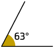
b)
c) 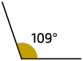
d)
e) 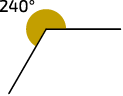
9. a) ; obtuso
b) ; raso
c) ; agudo
10. a) Manuel: ; Maria:
b) bicicleta
c) Não; Sim.
d) carrinho
11. b )
c)
Página 296
12. a) • A, B e C
C e D
A, D e E
b) A
c) t; s
d) D
13. a)
b)
c)
d)
e)
f)
14. A. , , e
B. , , , e
•4 segmentos; 5 segmentos
15. a) t, v
b) r, s; r, t; r, u; r, v; s, t; s, u; s, v; t, u; u, v
c) s, t; s, v
d) r, s; r, t; r, u; r, v; s, u; t, u; u, v
16. concorrentes
17. a) concorrentes
18. a) Sim.
b) Possível resposta:
2ª) Dobrar novamente a folha de modo que a parte dobrada anteriormente se sobreponha, ou seja, forme um ângulo de .
3ª) Desdobrar a folha.
4ª) Desdobrar mais uma vez a folha.
5ª) Traçar segmentos de reta sobre as marcas das dobras feitas e notar que os ângulos formados medem .
19. a) 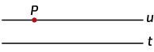
b) 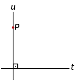
Um pouco mais
1. a) lata de lixo
b) banco
c) árvore
d) chafariz
2. a)
b)
c)
3. a) u; v
b) u, t; r, v; s, t; s, u; s, r; s, v; perpendiculares
Unidade 8 Polígonos e figuras semelhantes
1. a) I, II, V, VI e VII
b) aberta e simples: I; fechada e simples: II, V e VI; aberta e não simples: VII
c) II, V e VI
2.
I ) vértices: A, B e C; lados: , e ; ângulos internos: , e
II ) vértices: A, B, C, D, E, F, G e H; lados: , , , , , , e ; ângulos internos: , , , , , , e
3. a) I; triângulos e quadrilátero
b) pirâmide de base quadrangular; cilindro
4. triângulos e quadriláteros
5. d
6. a) decágono
b) pentágono
c) eneágono
d) hexágono
e) octógono
f) heptágono
convexo: b, f; não convexo: a, c, d, e
7. Sim, pois as faces do cubo são quadrados, ou seja, quadriláteros que têm todos os lados com a mesma medida de comprimento e todos os ângulos internos com a mesma medida de abertura.
8. a) I: triângulo; II: octógono; III: quadrilátero; IV: octógono; V: heptágono; VI: hexágono
b) convexos: I, III e VI; não convexos: II, IV e V
12. I: não regular; II: regular; III: não regular; IV: regular
a) Possível resposta: Os polígonos classificados como regulares têm todos os lados com a mesma medida de comprimento e todos os ângulos internos com a mesma medida de abertura.
b) Possíveis respostas: São parecidos, pois possuem 4 lados e têm 4 ângulos internos medindo cada um; São diferentes, pois o polígono II tem os 4 lados com a mesma medida de comprimento, o que não ocorre com o polígono III.
13. a) A-III; B-IV; C-I; D-II
b) A: octógono; B: triângulo; C: pentágono; D: quadrilátero
14. triângulos, quadriláteros e hexágonos
15. a) Concreção 6048; 1960
b) Não; As partes triangulares de mesma cor têm o mesmo formato, porém, das outras quatro partes não triangulares de mesma cor, duas têm formatos que lembram quadriláteros e outras duas, formatos que lembram pentágonos.
c) Possível resposta: triângulos, quadriláteros e pentágonos
17. a) : vértices: F, G, H; lados: , , ; ângulos internos: , ,
b) : vértices: L, M, N; lados: , , ; ângulos internos: , ,
18. Possível resposta:
19. 5 triângulos; , , , e
20. a) , , e
b) , , e
21. : isósceles; : isósceles; : equilátero e isósceles; : escaleno
22. 6 triângulos; equiláteros
23. a) isósceles
b) escaleno
c) equilátero e isósceles
24. A: acutângulo; B: retângulo; C: obtusângulo; D: obtusângulo; E: acutângulo; F: retângulo
25. , e
a) obtusângulo
b) Sim;
c) isósceles
d) 14 cm
26. a) isósceles
b) retângulos
28. a) vértices: F, G, H e I; lados: , , e ; ângulos internos: , , e
b) vértices: J, K, L e M; lados: , , e ; ângulos internos: , , e
29. 5 quadriláteros; ABHG, BCDH, ACDG, GDEF e ACEF
30. a) , , , ; quadrado, retângulo e losango
Página 297
b) , , , ; trapézio
31. Possíveis respostas:
a)
b) 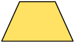
32. a) 12 palitos
b) 5 figuras
c) Possível resposta:
34. alternativa b
35. a) Falsa.
b) Verdadeira.
c) Verdadeira.
d) Verdadeira.
e) Falsa.
Possíveis respostas:
a) O paralelogramo tem dois pares de lados opostos paralelos.
e) O quadrado também é um retângulo e um losango.
36. paralelogramos: B, D, E, F, I e J; trapézios: C e G
a) losangos: D, E e I; retângulos: B, D e I; quadrados: D e I
b)
Não.
Não.
Sim.
Sim.
37. a) Sim. Possível resposta: Apesar de terem medidas diferentes, elas mantêm o mesmo formato, de maneira que, tomando uma delas como original, as demais serão ampliações ou reduções.
b) I e III
c) II e IV
38. a) II, IV e V; I
b) II
39. a) imagem II: ; imagem III:
b) imagem II: ; imagem III:
40. a) ampliação
b)
42. ou
Um pouco mais
1. a) 3 palitos
b) equilátero
c) • Isósceles:
Escaleno:
2.
- I: ; ; ;
- II: ; ; ;
a) I: ; II:
b) Possível resposta: A soma das medidas dos ângulos internos dos quadriláteros é .
3. a) triângulos: seis; quadriláteros: nenhum
b) triângulos: nenhum; quadriláteros: cinco
4. a) IV
b) I, II e III
c) I e III
d) I e II
e) I
Unidade 9 Localização e pares ordenados
1. a) Não.
b) 6A
2. a) 24 poltronas
b) Corredor: D2; D4; D11: C8; C10. Janelas: F1; F5; F7; F8; A3; A4; A10; A11; A14.
c) A10; B10; C10
3. a) C3; A quantidade de bauru vendida na sexta-feira.
b) linha 6
4. a) Félix 5
b) A3, C3 ou D2
5. a) ; ;
b) • Polígono I
Polígono III
Polígono II
6. a) e
b) 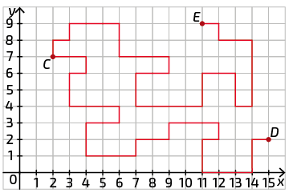
c) ;
7. Possível resposta: A formiga deverá: 1º) seguir em frente até a coordenada ; 2º) virar à direita e deslocar-se até a coordenada ; 3º) virar à esquerda e deslocar-se até a coordenada ; 4º) virar à direita e deslocar-se até a coordenada ; 5º) virar à direita e deslocar-se até a coordenada ; 6º) virar à esquerda e deslocar-se até a coordenada ; 7º) virar à direita e deslocar-se até a coordenada ; 8º) virar à direita e deslocar-se até a coordenada .
8. a) ; ;
b)
9. a) ; ;
Página 298
b) Ampliação. Porque as medidas de comprimento de cada lado do triângulo JKL estão duplicadas em relação às medidas correspondentes no triângulo ABC e os ângulos correspondentes têm medidas iguais.
c) triângulo GHI
d) Do triângulo DEF, pois as medidas dos lados correspondentes são proporcionais e os ângulos correspondentes têm medidas iguais.
10. a) Possível resposta:
![Imagem de parte de um plano cartesiano representado em uma malha quadriculada. Há um paralelogramo com vértice A com coordenadas 2 e 2; vértice B com coordenadas 0 e 0; vértice C com coordenadas 2 e 0; e vértice D com coordenadas 4 e 2. O mesmo paralelogramo está representado de forma ampliada, seus vértices tem coordenadas 6 e 9; coordenadas 0 e 3; coordenadas 6 e 3; e coordenadas 12 e 9. Além desse, o paralelogramo também está representado de forma reduzida. Esse tem seus vértices com coordenadas 7 e 1; coordenadas 6 e 0; coordenadas 7 e 0; e coordenadas 8 e 1.](../resources/images/respostas/it4872_6sam_g24_e003_re.png)
b) Possível resposta: ; ; ;
c) Possível resposta: ; ; ;
11. a) e
b) , e
12. a) Região Nordeste.
c) O território é usado para agricultura, extrativismo e pesca.
d) redução
Um pouco mais
1. a) A3, A4, A10, B3, B12, C6, C8, C13, D2, D9 e D15
b) azul
c) C6
2. ; ; ; ;
3. a) imagem III
b) imagem I
c) imagem II; porque essa imagem foi obtida reduzindo apenas a medida da largura da imagem I.
4. a) , , e
, , e
, , e
b) redução
5. IJKL
6. a) Possível resposta: ; ;
Unidade 10 Números na forma decimal
1. a) verde: e 0,3; azul: e 0,1; amarelo: e 0,2; branco: e 0,4
b) verde: e 0,16; azul: e 0,24; amarelo: e 0,32; branco: e 0,28
c) verde: e 0,07; azul: e 0,13; amarelo: e 0,31; branco: e 0,49
2. Possível resposta: A: novecentos e quinze vírgula três; B: oitenta vírgula vinte e quatro; C: sete vírgula quatrocentos e cinco; D: trinta e cinco vírgula oitenta e dois; E: zero vírgula zero sessenta e seis.
3. a) urubu-rei: ; anhuma: ; pelicano-pardo: ; albatroz-de-nariz-amarelo:
b) pelicano-pardo; anhuma
c) A: 1,7; B: 1,8; C: 1,9; D: 2,2
4. a) 0,1; b) 0,9; c) 3,6; d) 0,54; e) 0,005; frações na forma decimal: b, d, e.
5. a)
b)
c)
6. a) 2 tem valor relativo 20; 8 tem valor relativo 8; 3 tem valor relativo 0,3; 7 tem valor relativo 0,07 e 5 tem valor relativo 0,005.
b) 0,16
7. a) um inteiro e duzentos e cinquenta e três milésimos; um vírgula duzentos e cinquenta e três
b) noventa e seis centésimos; zero vírgula noventa e seis
c) cem inteiros e dois décimos; cem vírgula dois
d) seis inteiros e noventa e três milésimos; seis vírgula zero noventa e três
8. a) 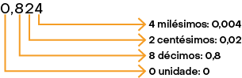
b) 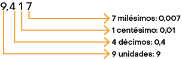
c) 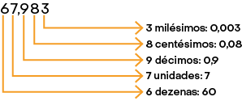
d) 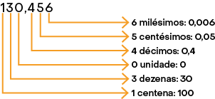
9. a) ; 0,60
b) ; 077
c) ; 0,69
d) ; 1,40
10. a) ;
b) ;
c) ;
d) ;
e) ;
11. A: 0,43; ; B: 6,35; ; C: 0,798; ; D: 2,081;
- I-A; II-D; III-B; IV-C
Página 299
12.
I ) A: 913; B: 0,913
II ) C: 82; D: 0,082
III ) E: 8; F: 0,008
IV ) G: 806; H: 1.000
13. a)
b)
c)
14. a-IV; b-II; c-I; d-III
15. a) ; 1,25; um inteiro e vinte e cinco centésimos; D
b) ; 0,7; sete décimos; C
c) ; 0,36; trinta e seis centésimos; A
d) ; 2,6; dois inteiros e seis décimos; B
16. a)
b) 2017; 2019
17. a)
b)
c)
d)
e)
f)
18. Possíveis respostas:
a) 3,2; 3,5; 3,9
b) 0,61; 0,65; 0,68
c) 2,033; 2,036; 2,039
d) 5,130; 5,131; 5,132
e) 6,511; 6,515; 6,518
f) 8,1; 8,12; 8,13
19. a) 0,257
b) Possíveis respostas: 205,7; 207,5; 250,7; 257,0; 270,5; 275,0; 502,7; 507,2; 520,7; 527,0; 570,2; 572,0; 702,5; 705,2; 720,5; 725,0; 750,2; 752,0
c) 5,720
20. A: 8; B: 6; C: 5; D: 9
21. b ) R$ 19,99; R$ 7,49
c) amaciante Limpe
d) biscoito de chocolate, iogurte Sabor ou pão de fôrma Boa Saúde
22. a) R$ 18,30
b) R$ 14,95
c) R$ 3,15
23. a) 85,45
b) 81,851
c) 319,037
d) 536,30
24. a) •
b)
25. a)
b)
26. a) R$ 12,64
b)
c) R$ 58,55
27. a) 20; 24,3; 28,6; 32,9; 37,2
b) 18,10; 17,39; 16,68; 15,97; 15,26
c) 15,996; 20,366; 24,736; 29,106; 33,476
28. a) 14,36
b) 3,181
c) 75,798
d) 91,263
e) 41,819
f) 785,37
29.
I )
II )
III )
IV )
30. a) Japão; Serra Leoa
b) • 7,1 anos
29,9 anos
c) 80,2 anos
32.
I ) ; ;
II ) ; ;
33. b )
I ) R$ 28,00
II ) R$ 24,00
III ) R$ 22,00
IV ) R$ 40,00
c) I: R$ 28,14; II: R$ 24,04; III: R$ 22,16; IV: R$ 39,81
34. a)
b)
c)
d)
35. a) 634
b) 340
c) 8.950
d) 49,64
e) 61.300
f) 7.855,6
36. a) R$ 79,00
b) R$ 99,00
37. a) • R$ 9,00 • R$ 83,00
b) R$ 32,00
38. a) 3,78
b) 14,79
c) 3,9918
d) 0,039
e) 1,8126
f) 0,00062
39.
40. a) R$ 2,25
b) R$ 4,25
41. ; ; ;
42. a-III; b-II; c-IV; d-I
43. a)
b)
c)
44. a) R$ 8,75
b) R$ 37,50
c) R$ 75,00
d) R$ 456,25
45. a) 46,42
b) 3.492,7348
c) 278,76
d) 521,4
e) 101.963,675
f) 43,296
46. a) 577,2
b) 577,2
c) 57,72
d) 5,772
47. a) Interlagos; Cascavel
b) Interlagos: ; Cascavel: ; Santa Cruz do Sul:
48. a) 25,36
b) 7,75
c) 80,604
d) 30,846
49. a) Sim.
b) III; R$ 10,13
50. a) 205; 196,8
b) 176; 169,4
c) 36; 37,4
d) 63; 64,62
51. a) 39,1
b) 0,561
c) 37,386
d) 34,748
52. a) arroz: R$ 15,00; feijão: R$ 19,36; tomate: R$ 18,91
b) R$ 53,27
54. 13.746
a) 1.374,6
b) 1.374,6
c) 137,46
d) 0,13746
55. a) 48,4
b) 893
c) 82
d) 4,8
e) 920
f) 126
56. a) 2; 1,8426
b) 72; 70,7952
c) 63; 65,1058
d) 480; 472,9182
e) 72; 72,1171
f) 144; 150,8342
57. a) ; 1,5
b) ; 0,4
c) ; 15,5
d) ; 0,25
e) ; 4,45
f) ; 0,625
58. a)
b)
c) terça-feira, quarta-feira, quinta-feira e sexta-feira
59. a)
b)
60. a) III
b) • I:
II:
III:
c) • Possível resposta: , e
Possível resposta: e
62. a) 2,666...; 6
b) 1,1818...; 18
c) 0,222...; 2
d) 1,666...; 6
63. a) Não, pois 10 dividido por 3 resulta em uma dízima periódica, ou seja,
64. a) 0,8333...; 0,83
b) 20,333...; 20,33
c) 0,09375; 0,09
d) 1,3030...; 1,30
e) 5,9375; 5,94
f) 11,078125; 11,08
65. a) A: 12,6 peças; B: 11,9 peças; C: 12,65 peças
b) máquina C
c) A: 756 peças; B: 714 peças; C: 759 peças
66. a) 3,8
b) 0,55
c) 5,7
d) 15,71
e) 13,56
f) 92,38
67. a) R$ 26,04; R$ 34,72
b) R$ 17,36
68. a) 10; História, 1º bimestre
b) • 7,3
8,1
7,2
69. a) R$ 6,51
b) R$ 52,08 e R$ 156,24
Página 300
70. a) 0,3852
b) 8,2805
c) 0,03234
d) 3.858,5
e) 796.521
f) 355.540
71. a) ;
b)
72. a)
b)
c)
d)
e)
f)
73. a) 0,36
b) 0,001
c) 0,0081
d) 68,7241
74. Talita: ; Pedro:
75. a)
b)
c)
d)
77. a-II; b-IV; c-I; d-III
- I: 2,8561
- II: 22,09
- III: 792,35168
- IV: 9,261
78. a) 54,872
b) 23,4256
c) 24,76099
d) 0,117649
79. a) ;
b) ;
c) ;
80. a) 0,03
b) 0,28
c) 0,73
d) 0,895
e) 1,05
f) 2,12
81. a) 5%
b) 25%
c) 893%
d) 15,6%
e) 5.901%
f) 10%
82. a)
b)
c)
84. 98 selos
85. a) R$ 269,80
86. a) 200
b) 12
c) 240
d) 40
87. aproximadamente
Um pouco mais
1. a) oitocentos e vinte e três milésimos
b) um inteiro e quarenta e cinco milésimos
2. a) Possível resposta: ; 0,5
b) Possível resposta: ; 0,55
c) Possível resposta: ; 0,18
3. a) 6,27
b) 14,5
c) 57,957
d) 18,9486
4. A: 17,15; B: 11,01; C: 24,25; D: 11,94
5. a) 33,2
b) 205,9
c) 163,8
d) 6,84
e) 5,552
f) 25.110
6. a) 7,344
b) 7,476
c) 7,344
d) 2.247
e) 0,7476
f) 0,02247
7. a) 16,5
b)
c)
d) 10,99
e) 2,35
f) 3,671
8. a)
b)
c)
d)
Unidade 11 Medidas
2. ; ;
3. a-II; b-IV; c-I; d-III
4. a) Pico da Neblina:
b) menos elevados: Pico da Bandeira, Pico da Pedra da Mina; mais elevados: Pico 31 de Março, Pico da Neblina
5. Possíveis respostas:
a) régua, trena, fita métrica ou metro articulado
b) régua, trena ou fita métrica
c) paquímetro ou micrômetro
d) trena ou metro articulado
e) fita métrica
f) paquímetro ou micrômetro
7. a) 1,23
b) 1,56
c) 2,8
d) 16
e) 0,9
f) 56
8. 840 caminhões
10. a) 6 portas
b) 2 portas; sala de estar e área de serviço
c) largura: ; comprimento:
12. a) comprimento: ; largura:
b) Sim; Há uma diferença de a mais na medida da sua largura.
14. a) miligrama
b) tonelada
c) quilograma
d) grama
15. a)
b)
c)
d)
16.
17. 336 potes
18. a) Possível resposta: Vatapá, bobó de camarão, caruru (o quiabo, com o qual se faz o caruru, foi trazido da África).
b)
- R$ 682,50
19. a)
b)
c)
d)
e)
f)
20. 25 caixas
21. a) 420
b) 30,2
c) 50
d) 4,5
e) 0,95
f) 1,59
22. a) ;
b)
c) 15 comprimidos
24. a) A
b) D
c) C
d) B
25. a-IV; b-III; c-I; d-II
26. a) III
b) O filhote aumentou a fenda na casca do ovo.
c)
27. a) • 15 peças • 900 peças • 2.925 peças
b) 100 peças
c) 1.200 peças
28. a) I: ; II: ; III:
b)
c) ;
29. a) Kimani Pharis Irungu: ; David Kiprono Metto: ; Kiplimo Stephen:
b)
c)
30. a)
b)
c)
31. a)
b)
32. a)
b) I
33. b ) 136 batimentos por minuto
34. a) quinta-feira
b) dias 2, 9, 16, 23 e 30
c) julho e agosto
d) dia 12
35. a) 9 anos
b) 13 anos
c) 19 anos
Página 301
36. a) I: 15 unidades; II: 12 unidades; III: 11 unidades; IV: 12 unidades; V: 19 unidades
b) IV
c) V; III
37. a-IV; b-I; c-II; d-III
38. a) • 4 unidades • 16 unidades • 8 unidades
b) I e II; III e V; IV, VI e VII
c) • 25%
12,5%
12,5%
39. I: ; II: ; III: ; IV:
a) III:
b)
40. a)
b) I: ; II: ; III: ; IV: ; V: ; VI: ; VII:
c) 10%; 25%
41. 2.112 pessoas
42. b ) •
c)
d) ou
43. a)
b) 104 municípios
44. a) Resposta: Norte: ; Nordeste: ; Centro-Oeste: ; Sudeste: ; Sul:
b) Não.
45. a) 110.000
b) 133.100
c) 493.680
d) 201.465
e) 1,55
f) 1,5
g) 50
h) 9,6
46.
47. aproximadamente 14,9 hectares
48. a)
b)
c)
d)
49. aproximadamente 828 tijolos
50.
II ) medida do comprimento do lado: ; medida do perímetro: ; medida da área:
III ) medida do comprimento do lado: ; medida do perímetro: ; medida da área:
b) Não; Não.
c) medida do comprimento do lado: ; medida do perímetro: ; medida da área:
51. a)
b) Sim.
c)
52. a) Ao duplicar a medida do comprimento do lado do quadrado, Pedro obteve uma medida da área equivalente a vezes a medida da área do quadrado inicial. Do mesmo modo, ao triplicar a medida do comprimento do lado de um quadrado ele obteve uma medida da área equivalente a vezes a medida da área do quadrado original.
b) medida da área do quadrado 2: ; medida da área do quadrado 3: ; Sim.
53. a)
b)
c)
54. a) lote I: ; lote II: ; lote III:
b) lote I: R$ 123.240,00; lote II: R$ 154.840,00; lote III: R$ 177.750,00
c) lote I: ; lote II: ; lote III:
55. a) aproximadamente
b) aproximadamente
56. a) 19.300
b) 0,0295
c) 0,0535
d) 9.500
e) 125.000
57. a)
b) ;
c) 1.017 peças; 220 peças
58. a)
b)
c) medida do comprimento: ; medida da largura:
60. a) 24 cubinhos
b) 13 cubinhos
c) 12 cubinhos
61. a) pilha 1: ; pilha 2: ; pilha 3:
b) 15 cubos
c)
62. a)
b)
c)
Um pouco mais
1. a) 20 pipas
b) 28 pipas
c) 520 pipas
2. a)
b) R$ 6.264,00
3. a) da tarde ou ; da tarde ou
b)
c)
d) ;
4. terça-feira
5. a) I: 18 unidades; II: 26 unidades; III: 20 unidades; IV: 24 unidades
b) II; I
c) • II
I
6. a)
b)
c)
7.
Unidade 12 Estatística e probabilidade
2. a) A principal informação apresentada no gráfico é a quantidade de municípios com coleta seletiva no Brasil, de 2002 a 2020. Na tabela, é a média da composição da coleta seletiva no Brasil em 2019.
b) gráfico: COMPROMISSO EMPRESARIAL PARA RECICLAGEM (Cempre). Pesquisa Ciclosoft: resumo executivo. Disponível em: https://tedit.net/ytoNax. Acesso em: 24 mar. 2022.; tabela: COMPROMISSO EMPRESARIAL PARA RECICLAGEM (Cempre). Review 2019. Disponível em: https://tedit.net/KAQom4. Acesso em: 24 mar. 2022.
c) aproximadamente 22,8%
4. a) Relacionar as barras correspondentes a cada região brasileira com o mês ao qual elas se referem.
b) região; quantidade de veículos emplacados
c) região e mês
d) 35.655 veículos
e) 59.308.607; 59.384.240
5. a) 475.648; Não.
b) industrial; aproximadamente 35%
c) aproximadamente 4%
6. a) •
b) dia 05
c) ;
d) dia 04
7. b ) Não.
8. a) proprietário
b) gerente operacional e proprietário; proprietário
Página 302
10. a) Há duas maneiras: ir da cidade B até a cidade C, sem passar por qualquer outra cidade; ir da cidade B até a cidade C, passando pela cidade A.
b) Não, pois no esquema não há um caminho que permita sair da cidade B e chegar à cidade D sem que seja necessário passar pela cidade C.
11. a) Como classificar um quadrilátero em trapézio, paralelogramo ou quadrilátero qualquer.
b) Sim.
12. Sugestão de resposta:
![Imagem de um fluxograma com as seguintes informações: Início, dentro de uma forma oval. Seta aponta para: 'Os algarismos das dezenas são iguais?', que está dentro de um losango. Se a resposta for sim, seta aponta para: 'Os algarismos das unidades são iguais?' Se a resposta para 'Os algarismos das dezenas são iguais?' for não, seta aponta para: 'O maior número é aquele que tem o maior algarismo das dezenas', dentro de um retângulo. Seta aponta para fim. Se a resposta para 'Os algarismos das unidades são iguais?', que está dentro de um losango for sim, seta aponta para: 'Os números são iguais, dentro de um retângulo'. Se a resposta for não, seta aponta para: 'O maior número é aquele que tem o maior algarismo das unidades', dentro de um retângulo. Ambas as respostas apontam para. Fim, dentro de uma forma oval.](../resources/images/respostas/g24_6sam_h497349Na.png)
13. a) Possível resposta: Verificamos o algarismo das unidades do número: se o algarismo das unidades for zero, concluímos que o número é divisível por 10; mas se o algarismo das unidades for diferente de zero, concluímos que o número não é divisível por 10.
b) Sugestão de resposta:
14. Possível resposta:
![Imagem de um fluxograma com as seguintes informações: Início, dentro de uma forma oval. Seta aponta para: 'O triângulo tem todos os lados com medidas de comprimento diferentes?', que está dentro de um losango. Se a resposta for sim, seta aponta para: 'O triângulo é escaleno', dentro de um retângulo. Que tem a seta apontando para Fim. Se a resposta for não, seta aponta para: 'O triângulo tem apenas dois lados com medidas de comprimentos iguais?', que está dentro de um losango. Se a resposta for sim, seta aponta para: 'O triângulo é isósceles', dentro de um retângulo. Se a resposta for não, seta aponta para: 'O triângulo é equilátero', dentro de um retângulo. Ambas as respostas apontam para 'Fim', dentro de uma forma oval.](../resources/images/respostas/g24_6sam_x736060Yd.png)
16. a)
| Principal atitude para preservar o meio ambiente – 2024 | |
|---|---|
| Atitude | Quantidade de entrevistados |
| Plantar árvores | 12 |
| Economizar água | 19 |
| Não poluir o meio ambiente | 25 |
| Evitar água parada | 12 |
| Outros | 7 |
Fonte dos dados: Estudantes da escola em que Caio estuda.
b) 75 pessoas
c) 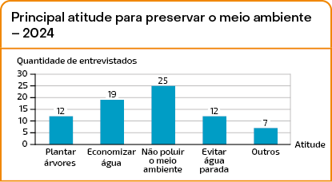
Fonte dos dados: Estudantes da escola em que Caio estuda.
19. a) cara e coroa
b) Sim.
c)
- ou 50%
- ou 50%
d) Não.
20. c ) Não.
21. a)
| Nome | Cara | Coroa | Quantidade de lançamentos |
|---|---|---|---|
| Marcelo | 7 | 5 | 12 |
| Gisele | 13 | 10 | 23 |
| Renata | 15 | 18 | 33 |
| Fabiano | 32 | 33 | 65 |
| Rafaela | 29 | 22 | 51 |
| Total | 96 | 88 | 184 |
b) 184 lançamentos
c) 96 foram cara; 88 foram coroa
d) • aproximadamente 52,17%
aproximadamente 47,83%
22. O resultado do item d da atividade 21 é um valor próximo a 50%, que é o resultado do cálculo da probabilidade de obter cara ou coroa ao lançar uma moeda referente à atividade 19, item c.
Um pouco mais
1. a) janeiro
b) 39 automóveis
Página 303
c) Sugestão de resposta:
Elaborado pelo autor com dados fictícios.
2. a) bom
b) 24 pessoas
c) 31,25%
3. Sugestão de resposta:
4. a) ou 50%
b) ou 50%
c) ou
d) ou
e) ou 50%
f) ou
Respostas referentes à unidade 1
13. a)
| Poliedro | Quantidade de lados do polígono da base | Quantidade de faces | Quantidade de arestas | Quantidade de vértices |
|---|---|---|---|---|
| Pirâmide de base triangular | 3 | 4 | 6 | 4 |
| Pirâmide de base quadrada | 4 | 5 | 8 | 5 |
| Pirâmide de base hexagonal | 6 | 7 | 12 | 7 |
13. c )
| Poliedro | Quantidade de lados do polígono da base | Quantidade de faces | Quantidade de arestas | Quantidade de vértices |
|---|---|---|---|---|
| Prisma de base triangular | 3 | 5 | 9 | 6 |
| Prisma de base pentagonal | 5 | 7 | 15 | 10 |
| Prisma de base hexagonal | 6 | 8 | 18 | 12 |
Respostas referentes à unidade 2
14.
| Sistema de numeração indo-arábico | 44 | 46 | 64 | 66 |
|---|---|---|---|---|
| Sistema de numeração romano | XLIV | XLVI | LXIV | LXVI |
| Sistema de numeração egípcio |